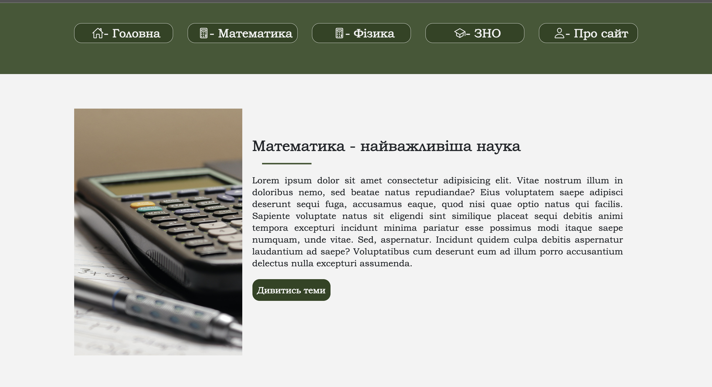
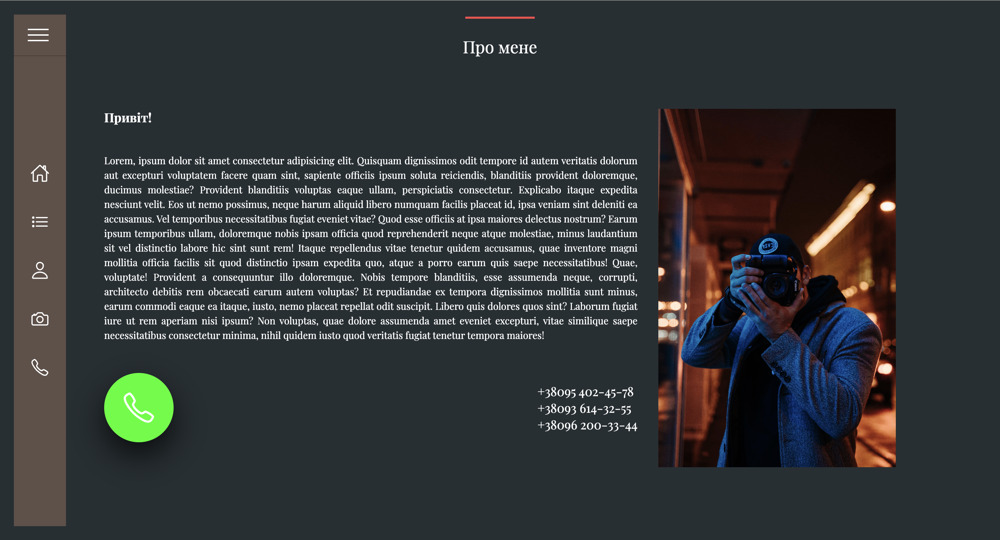

My projects


Numerica
This site was made for a teacher who teaches private lessons in subjects such as mathematics and physics. On the main page of this site, you can see an explanation of why it is so important to study these disciplines, and in the blocks of these disciplines there are buttons with a transition to pages where you can familiarize yourself with topics and presentations on these topics. There is also a list of types of classes on the main page. This site is adapted for all devices.
Technologies that used:
Photograph
The photographer's business card website with an interesting solution for placing the menu on the website. Also, when writing this site, the slider was written by hand using Javascript.
Technologies that used:
